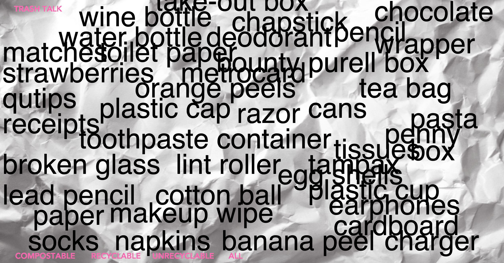
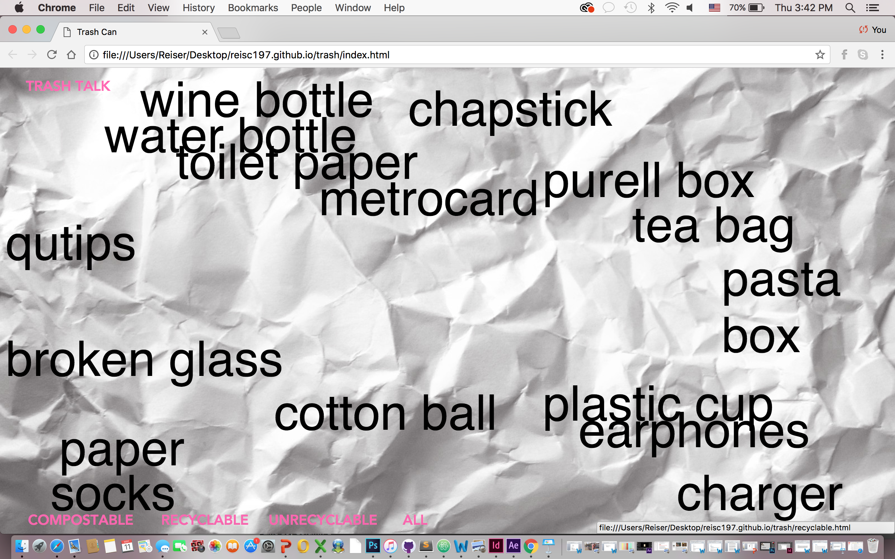
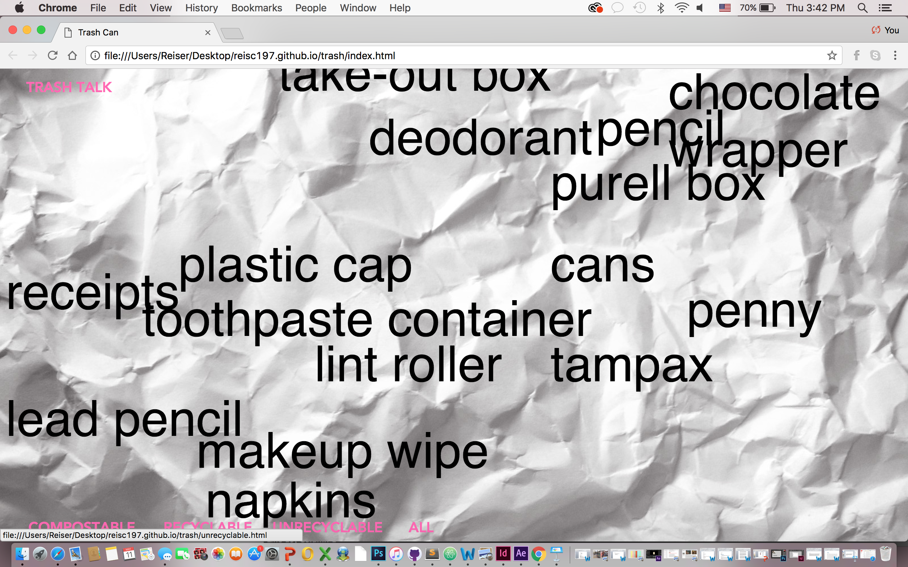
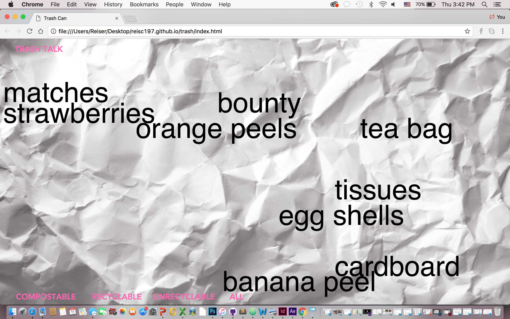

Through my project ‘Trash Talk” I aimed to make people more aware about what they through in their trashcan on a daily basis. Usually, I do not recycle and after researching for this project, I find myself thinking about what I am putting in my trash. Is it Compostable, recyclable, or neither? I decided to make the look of this site messy and jumbled up. The background is a crumpled paper. The type is set in Helvetica, each position of each word has a reason for it. The words describe what I through away in one week. The positioning of each word shows the quantity. For example, I had a lot of take out containers, so it is placed on the top of the screen. When you hover over a pink heading, like Compostable, everything goes to opacity of zero. What stays is everything that was compostable in my trash that week. Doing this project made me want to start better habits about throwing out my garbage. I discovered things that I didn’t know were so impactful to our earth while I was going through my sources. From now on I will actively think about where I should through my trash away.
   